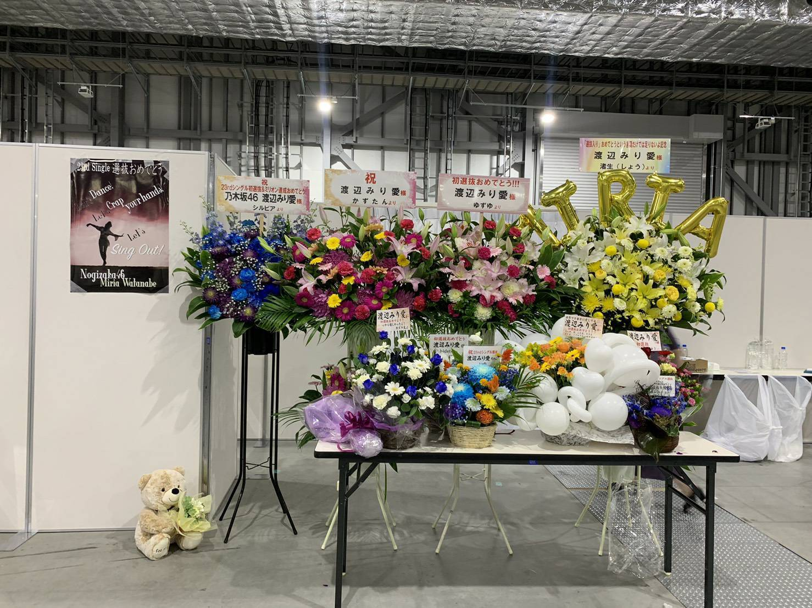

2019/0710Wed阿頼耶識

幕張メッセ、京都パルスプラザ
個別握手会がありました！
お越し下さった皆様、ありがとうございました〜


はあ〜、色々な色の素敵なお花達！
ファンの皆さん私の好みを分かっていらっしゃる
色合いもお花も。とても素敵です。
ありがとうございます！

全国ツアーが始まりました！
今年も1曲目からダラダラに汗をかいております。
全身全霊、そして楽しんで
明治神宮球場まで駆け抜けられたらなと
思います。
うちわやタオル、サイリウムも
しっかり見えてます。
頑張る励みになってます、ありがとうございます！

先日久しぶりに友達と会う事ができました。
夢の国へ行ってきてみました！
あれですよ、私夢の国前に苦手だって
言った気がするけど、
私がインドアだし毎回会える訳ではないから
どうせならパーっとしたいねと話し合い、
パーっと出来る場所へ行ってまいりました。笑
普段は絶対断固付けない耳も
友達に勧められて買っちゃいました、、
やっちまった、、笑
玲香さんの卒業が発表されました。
ずっと背中を見てきました
同じ舞台で長い期間一緒にいて
玲香さんの涙も笑顔も沢山見てきました
玲香さんと話していると
ふわ〜と心が軽くなる感じがあって
落ち着きます。
それってきっと玲香さんの魅力なのかなあと
本当に素敵な方です。
勝手ながら、ブログを読んで泣いてしまいました、、
私達は前を向いて進まなければ
いけない。
最後まで、玲香さんのあの素敵な笑顔と
背中を見て色々な事を吸収していきたいです！
みり愛
2019/07/10 20:18
コメント(527)
＜風船は生きている＞のMVを けっこう久しぶりに今 連続で聴いています！！！。 みりりさん と 佐々木琴子ちゃん を目当てで聴いています！！！。 では。
こんばんは。
夏休みを満喫しています。
友達とプールに行ったり、お祭りに行ったり
毎日、楽しく過ごしています。
でも、楽しくばかりないのが世の常で、
宿題という現実が藪の中からわいてきます。
自由研究、という宿題がありまして、
その名の通り自由に何かを研究してこい
というものです。
自由に研究って言ってもなぁ
自分の好きなこと...うーん
そうだ！
乃木坂46だ！
乃木坂の歴史、メンバーひとりひとりの個性
乃木坂工事中、ライブパフォーマンス、握手会
これなら大好きでいくらでも
研究出来そうです
乃木坂のファンで良かった〜
助かった〜
お母さんに止められました。
夏休みを満喫しています。
友達とプールに行ったり、お祭りに行ったり
毎日、楽しく過ごしています。
でも、楽しくばかりないのが世の常で、
宿題という現実が藪の中からわいてきます。
自由研究、という宿題がありまして、
その名の通り自由に何かを研究してこい
というものです。
自由に研究って言ってもなぁ
自分の好きなこと...うーん
そうだ！
乃木坂46だ！
乃木坂の歴史、メンバーひとりひとりの個性
乃木坂工事中、ライブパフォーマンス、握手会
これなら大好きでいくらでも
研究出来そうです
乃木坂のファンで良かった〜
助かった〜
お母さんに止められました。
みり愛ちゃん、こんばんは。
今日、途中からだけど少し猫舌を見たよっ！
なるほど、みり愛ちゃんときいちゃんのコンビはインパクトがすごいね
めちゃくちゃなお題からの謝罪会見は衝撃的だった(￣∇￣)
ものすごく元気が溢れていてよかったよ
今日、途中からだけど少し猫舌を見たよっ！
なるほど、みり愛ちゃんときいちゃんのコンビはインパクトがすごいね
めちゃくちゃなお題からの謝罪会見は衝撃的だった(￣∇￣)
ものすごく元気が溢れていてよかったよ
柏餅です⊂(ο･㉨･ο）⊃”くまﾃﾞｽ…
猫舌SHOWROOM♡観ました。一つ結びの渡辺殿♡きゃわわうれぴーぽーo(￣◎￣)o ﾊﾞﾌﾞｩ♡渡辺殿と日奈子ちゃんの仲の良さが伝わってぽっぽぽー[壁]ｴ＿)逆ﾁﾗﾘ♡手作りうちわナイス[岩蔭|](ｴ)￣)にゃんにゃん♡モンブランケーキうまぺろんぬそうだぷーq(T▽Tq)(pT▽T)p耳♡ぱんだちゃん♡お寿司♡のぎざかるた@れかたんいくちゃんまなったんけんぴゅー(o≧▽ﾟ)oニパッ♡好きだにゃんにゃん♡よきよきピーナッツでばいころまるロンo(^-^o)(o^-^)oロンo(^-^o)(o^-^)oロン
猫舌SHOWROOM♡観ました。一つ結びの渡辺殿♡きゃわわうれぴーぽーo(￣◎￣)o ﾊﾞﾌﾞｩ♡渡辺殿と日奈子ちゃんの仲の良さが伝わってぽっぽぽー[壁]ｴ＿)逆ﾁﾗﾘ♡手作りうちわナイス[岩蔭|](ｴ)￣)にゃんにゃん♡モンブランケーキうまぺろんぬそうだぷーq(T▽Tq)(pT▽T)p耳♡ぱんだちゃん♡お寿司♡のぎざかるた@れかたんいくちゃんまなったんけんぴゅー(o≧▽ﾟ)oニパッ♡好きだにゃんにゃん♡よきよきピーナッツでばいころまるロンo(^-^o)(o^-^)oロンo(^-^o)(o^-^)oロン
(長い為前略)
みりぃぃぃぃぃっ…(>_<)
愛あああああ(>_<)
…っっ(>_<)！
あ〜、清々しい、、、
今日も今日とて世界で一番可愛いよ


愛してるから、、(^ ^)！
嬉しいの本当、、(^_-)-

みりぃぃぃぃぃっ…(>_<)
愛あああああ(>_<)
…っっ(>_<)！
あ〜、清々しい、、、
今日も今日とて世界で一番可愛いよ
愛してるから、、(^ ^)！
嬉しいの本当、、(^_-)-
みり愛よ！！！！頑張れ(^ ^)！
みり愛

みりあちゃん、こんばんは!
珠美ちゃんのブログのみりあちゃん可愛すぎました(*˘︶˘*).｡.:*♡
だいすき!
珠美ちゃんのブログのみりあちゃん可愛すぎました(*˘︶˘*).｡.:*♡
だいすき!
みり愛！今日もお疲れ！
最近すごく暑いねー
ぼくはこんな天気の中でも外で作業したり
見回りとか、警戒勤務とかまであるから
もう汗でいっぱいな毎日を過ごしてるよ
早く秋になってくれないかねー
そして桃、すっごく美味そう、、、
大好きなのよ桃
大好きな果物3つが林檎、桃、苺
それぞれ季節があって好きだな
再来週には休暇で家に帰るから
その時にぼくも桃もらっちゃおう(笑)
暑いなか、お互い頑張ろう！
夏バテには注意をー
部屋の模様替えも手伝ってあげたいけどね
やっぱ無理w
では、また！
ユン
最近すごく暑いねー
ぼくはこんな天気の中でも外で作業したり
見回りとか、警戒勤務とかまであるから
もう汗でいっぱいな毎日を過ごしてるよ
早く秋になってくれないかねー
そして桃、すっごく美味そう、、、
大好きなのよ桃
大好きな果物3つが林檎、桃、苺
それぞれ季節があって好きだな
再来週には休暇で家に帰るから
その時にぼくも桃もらっちゃおう(笑)
暑いなか、お互い頑張ろう！
夏バテには注意をー
部屋の模様替えも手伝ってあげたいけどね
やっぱ無理w
では、また！
ユン
みり愛さんお疲れ様です！
突然ですが、みり愛さんは道尾秀介さんの『いけない』という小説を読んだことありますか？
自分は先日から数回読んでいるのですがどうしてもわからないことが一つあるんですよ、、、
読解力不足ですかね
毎日暑いけど無理しすぎず、それでも楽しんでいこーーーー！
突然ですが、みり愛さんは道尾秀介さんの『いけない』という小説を読んだことありますか？
自分は先日から数回読んでいるのですがどうしてもわからないことが一つあるんですよ、、、
読解力不足ですかね
毎日暑いけど無理しすぎず、それでも楽しんでいこーーーー！
らじらーと猫舌SRで宇宙兄弟ラッシュでしたね！
机下からの登場からSR史上類を見ないハグ数、初の？乃木坂謝罪会見（笑）
うちわを作っていたのを忘れそうなくらい内容が濃すぎでした！
スタッフさんも宇宙兄弟だとギアが一つ違いますね（笑）
また、いつもらじらーから猫舌SRの流れなので、オリラジ中田さんの”Am I Loving?”発音がクセになってますね（笑）
総じて言うと・・・日奈子さんからみり愛さんへの愛が溢れてました(^^)
机下からの登場からSR史上類を見ないハグ数、初の？乃木坂謝罪会見（笑）
うちわを作っていたのを忘れそうなくらい内容が濃すぎでした！
スタッフさんも宇宙兄弟だとギアが一つ違いますね（笑）
また、いつもらじらーから猫舌SRの流れなので、オリラジ中田さんの”Am I Loving?”発音がクセになってますね（笑）
総じて言うと・・・日奈子さんからみり愛さんへの愛が溢れてました(^^)
柏餅です⊂(ο･㉨･ο）⊃”くまﾃﾞｽ…
BUBUKA9月号購入しました。ポスター渡辺殿すぎょい‼▼o◎ｪ◎o▼アップの渡辺殿♡きゃわわうれぴーぽーo(￣◎￣)o ﾊﾞﾌﾞｩ♡赤色のお洋服を着た渡辺殿お綺麗やわぁ[壁]ｴ＿)逆ﾁﾗﾘ♡ポジティブ渡辺殿の記事貪欲に読んでおりまふσ(´∀`●)ｱﾀｼ ♡ほんじつもみりりんぬ♡パワー100万馬力でばいころまる( ;-(ｴ)-)ゞｸﾏｯﾀﾅｧ…
BUBUKA9月号購入しました。ポスター渡辺殿すぎょい‼▼o◎ｪ◎o▼アップの渡辺殿♡きゃわわうれぴーぽーo(￣◎￣)o ﾊﾞﾌﾞｩ♡赤色のお洋服を着た渡辺殿お綺麗やわぁ[壁]ｴ＿)逆ﾁﾗﾘ♡ポジティブ渡辺殿の記事貪欲に読んでおりまふσ(´∀`●)ｱﾀｼ ♡ほんじつもみりりんぬ♡パワー100万馬力でばいころまる( ;-(ｴ)-)ゞｸﾏｯﾀﾅｧ…
みり愛、おはよう☺️
バッティングの動画、観たよ。いちいち振り返るみり愛、可愛い。初めてで、あれだけ打てれば上手いよ。
朝から幸せな気分で仕事に行ってきます。
今日も朝から暑いから、体調に気をつけてね。
またコメントするね。では。
バッティングの動画、観たよ。いちいち振り返るみり愛、可愛い。初めてで、あれだけ打てれば上手いよ。
朝から幸せな気分で仕事に行ってきます。
今日も朝から暑いから、体調に気をつけてね。
またコメントするね。では。
チャァオ～～!☆彡
めたんこ可愛いぃ～～～⤴️⤴️みりちゃま、こんにちは～～～⤴️⤴️❕❤️❤️❤️❤️❤️笑顔
元気ぃ⤴️⤴️ん❔❤️❤️❤️❤️❤️笑顔
最近みりちゃまが、メンバー写メに写っていて
おいらは、ほっこりしています❕❤️❤️❤️❤️❤️笑顔
みりちゃまの可愛いらしさ～～⤴️⤴️
もぉ～～～⤴️⤴️最高に満点です❕❤️❤️❤️❤️❤️笑顔
また楽しみにしているねぇ❕❤️❤️❤️❤️❤️笑顔
それでは、みりちゃま毎日暑いから、お身体に気を付けてお仕事頑張ってねぇ～⤴️⤴️❕❤️❤️❤️❤️❤️笑顔
またねぇ～❕❤️❤️❤️❤️❤️笑顔
☆大人しい、おすまし！より☆彡
みり愛あああああ
チャァオ～～!☆彡
みりちゃま～～⤴️⤴️
今、バッティングセンターの動画見たよぉ～～～⤴️⤴️❕❤️❤️❤️❤️❤️笑顔
めたんこ楽しそぉ～～～⤴️⤴️❕❤️❤️❤️❤️❤️笑顔
おいら、最近バテるから全然やってないや～～～⤴️⤴️❕笑顔
うちの近所、都内と違って
球速150キロメートルが全然ないから
140キロメートルで、我慢してます❕笑顔
やはり行く前は、部屋でプラスチックのカラーバットを使って
振った後のラインが綺麗に体に「無理なく」自然に振れているか確認して
ボールのライン(線)と振るバットのライン(線)のイメージをして
更に当たった瞬間、トップスピンをかけるように
アッパースイングをして、イメトレできたら
その後20キロのダンベルを握って
さっきのことを思い出しながら、スローモーションの様に振ります❕笑顔
(スローモーションめっちゃきついです❕笑顔)
そしてようやくバッティングセンターに、お出かけします❕笑顔
構え方は全身細く絞って、バットを振る時先方の足をひろげて回転をかけます❕笑顔
その時、力の割合は6、7割りにとどめながら
タイミングをとりながら、全身のバネを使ってフルスイングでいきます❕笑顔
軽い力で、めっちゃ飛びます❕笑顔
涼しいシーズンに行きたいです❕❤️❤️❤️❤️❤️笑顔
みりちゃま、頑張ってねぇ❕❤️❤️❤️❤️❤️笑顔
またねぇ❕❤️❤️❤️❤️❤️笑顔
☆大人しい、おすまし！より☆彡
こんばんは。セブンだよ(ฅ'ω'ฅ)♪
今日も1日おつかれさまでした
ナイスバッティング！
フォームはあれだったけど
当てることが大事やねん！
冷しゃぶサラダ食べた？
オレも食べたい
では、明日も1日楽しもうd(@^∇ﾟ)/ﾌｧｲﾄｯ♪
おやすみり愛☪️
今日も1日おつかれさまでした
ナイスバッティング！
フォームはあれだったけど
当てることが大事やねん！
冷しゃぶサラダ食べた？
オレも食べたい
では、明日も1日楽しもうd(@^∇ﾟ)/ﾌｧｲﾄｯ♪
おやすみり愛☪️
柏餅です⊂(ο･㉨･ο）⊃”くまﾃﾞｽ…
冷しゃぶサラダをあむあむあむ[壁]ｴ＿)でばいころまるロンo(^-^o)(o^-^)oロンo(^-^o)(o^-^)oロン
冷しゃぶサラダをあむあむあむ[壁]ｴ＿)でばいころまるロンo(^-^o)(o^-^)oロンo(^-^o)(o^-^)oロン
みり愛お疲れ。。
構えは助っ人外国人、スイングは....笑
やっぱり宇宙兄弟だね。
じゃあね。。
構えは助っ人外国人、スイングは....笑
やっぱり宇宙兄弟だね。
じゃあね。。
みり愛ちゃんこんにちは❗
暑いね〜
みり愛ちゃん大丈夫かな？
冷しゃぶサラダは僕も好きでこんな暑い時期は頻繁に食べてるよ(^^)
大阪全握、マーキュリーレーン
続けて亜美ちゃんと握手出来るなんて夢のようなんだけど残念ながらスケジュール的に行けない〜
(涙)
みり愛ちゃん、大阪も暑いと思うけど、楽しんでね！
また素敵な空の写真待ってるね〜！
暑いね〜
みり愛ちゃん大丈夫かな？
冷しゃぶサラダは僕も好きでこんな暑い時期は頻繁に食べてるよ(^^)
大阪全握、マーキュリーレーン
続けて亜美ちゃんと握手出来るなんて夢のようなんだけど残念ながらスケジュール的に行けない〜
(涙)
みり愛ちゃん、大阪も暑いと思うけど、楽しんでね！
また素敵な空の写真待ってるね〜！
コメント失礼しまーす！
みり愛今日も1日お疲れ様！
コメントするの久しぶりになってしまったー
普段、会社の行き帰りの電車の中でコメントしてるんだけど、今週は会社が夏休みだったんだよね〜
水曜日にザンビのやつ行ったんだけど、残念ながらみり愛の回ではなかった…
昨日は次のシングルの握手券の当落があって、みり愛の握手券を初めてゲットしました！
まだ先だし、2会場で枚数も多くないけど、今からすごく楽しみ‼️
もし、来週の申し込みでも残ってたら、もう少し追加できるように申しみたいと思います。
明日の全国握手会頑張ってね‼️
またコメントするねー
みり愛今日も1日お疲れ様！
コメントするの久しぶりになってしまったー
普段、会社の行き帰りの電車の中でコメントしてるんだけど、今週は会社が夏休みだったんだよね〜
水曜日にザンビのやつ行ったんだけど、残念ながらみり愛の回ではなかった…
昨日は次のシングルの握手券の当落があって、みり愛の握手券を初めてゲットしました！
まだ先だし、2会場で枚数も多くないけど、今からすごく楽しみ‼️
もし、来週の申し込みでも残ってたら、もう少し追加できるように申しみたいと思います。
明日の全国握手会頑張ってね‼️
またコメントするねー
こんばんは。セブンだよ(ฅ'ω'ฅ)♪
今日も1日おつかれさまでした
注文した商品届いた？
ウチは届いたよーヾ(o´∀｀o)ﾉﾜｧｰｨ♪
柚子胡椒のオクラ！
未知！！
食したい！
明日は握手会だねー
楽しもうねー(^-^)
では、明日も1日楽しもうd(@^∇ﾟ)/ﾌｧｲﾄｯ♪
o(ﾟ▽＾)ﾉｼまたねぃ♪
今日も1日おつかれさまでした
注文した商品届いた？
ウチは届いたよーヾ(o´∀｀o)ﾉﾜｧｰｨ♪
柚子胡椒のオクラ！
未知！！
食したい！
明日は握手会だねー
楽しもうねー(^-^)
では、明日も1日楽しもうd(@^∇ﾟ)/ﾌｧｲﾄｯ♪
o(ﾟ▽＾)ﾉｼまたねぃ♪
こんばんは。セブンだよ(ฅ'ω'ฅ)♪
今日も1日おつかれさまでした
注文した商品届いた？
ウチは届いたよーヾ(o´∀｀o)ﾉﾜｧｰｨ♪
柚子胡椒のオクラ！
未知！！
食したい！
明日は握手会だねー
楽しもうねー(^-^)
では、明日も1日楽しもうd(@^∇ﾟ)/ﾌｧｲﾄｯ♪
o(ﾟ▽＾)ﾉｼまたねぃ♪
今日も1日おつかれさまでした
注文した商品届いた？
ウチは届いたよーヾ(o´∀｀o)ﾉﾜｧｰｨ♪
柚子胡椒のオクラ！
未知！！
食したい！
明日は握手会だねー
楽しもうねー(^-^)
では、明日も1日楽しもうd(@^∇ﾟ)/ﾌｧｲﾄｯ♪
o(ﾟ▽＾)ﾉｼまたねぃ♪
こんばんは。セブンだよ(ฅ'ω'ฅ)♪
今日も1日おつかれさまでした
注文した商品届いた？
ウチは届いたよーヾ(o´∀｀o)ﾉﾜｧｰｨ♪
柚子胡椒のオクラ！
未知！！
食したい！
明日は握手会だねー
楽しもうねー(^-^)
では、明日も1日楽しもうd(@^∇ﾟ)/ﾌｧｲﾄｯ♪
o(ﾟ▽＾)ﾉｼまたねぃ♪
今日も1日おつかれさまでした
注文した商品届いた？
ウチは届いたよーヾ(o´∀｀o)ﾉﾜｧｰｨ♪
柚子胡椒のオクラ！
未知！！
食したい！
明日は握手会だねー
楽しもうねー(^-^)
では、明日も1日楽しもうd(@^∇ﾟ)/ﾌｧｲﾄｯ♪
o(ﾟ▽＾)ﾉｼまたねぃ♪
更新ありがとー！
京都での握手会、初めて行きましたー！
只でさえ可愛いのに、浴衣姿は本当に可愛すぎました！！
また行きまーす！
京都での握手会、初めて行きましたー！
只でさえ可愛いのに、浴衣姿は本当に可愛すぎました！！
また行きまーす！
あいしてるから


やっとテスト終わったよ！てか最近ほんと暑いね(ノ_＜)
握手会体調大丈夫だったかなってただただ心配してた、、
その後のらじらーも少し鼻声ぽかった(ノ_＜)私も今鼻声。←笑
らじらーもしっかり聴いたよ！あのクイズは難しすぎよ、、
予想してたけどさ、一食しか食べてないの？(ノ_＜) 身体作られる時期だからすごく心配よ、、まぁ今の時期は食欲なくなるよね、、私はそうめんって投稿したのよ！惜しくない？笑
うどんかあああ！同じ麺類まではいったのに！今回のらじらーでさ、藤森さんとかがみり愛はお米っていってたじゃん？あれ、すごくわかるというか、ひたすら共感ばっかりしてた(^ ^)
藤森さんちゃんとみり愛のことわかってらっしゃる。笑笑
みり愛ちゃんの良さって甘みとかじゃなくて、甘みの向こう側を見せてくれるの、うん、それよって思った！笑笑
ほんとに安心するのよねみり愛って。一生食べ続けられるって言う藤森さんの例えめっちゃわかるなあ。スイーツとか流行りのじゃなく、ずっと噛んでいられるような感じね！お米って感じなのよほんと！！(伝われえ
やっぱりみり愛と会うと安心するし落ち着くし楽しいし可愛いし大好きだし！♡あとみり愛の爪がすき！綺麗だよね〜
私も最近爪のお手入れし始めたよ！
ほんとお米のような安心感なんだ〜！
そして今日はbubukaさんだねついに♡ 買ってくるよ！てか今日のみり愛のザンビ にも会いに行きたかったよ、、(ノ_＜)
他の日はもう出ないかな？
Showroomはちゃんと見るからね〜♡宇宙兄弟たのしみ(^ ^)
まこぺんより